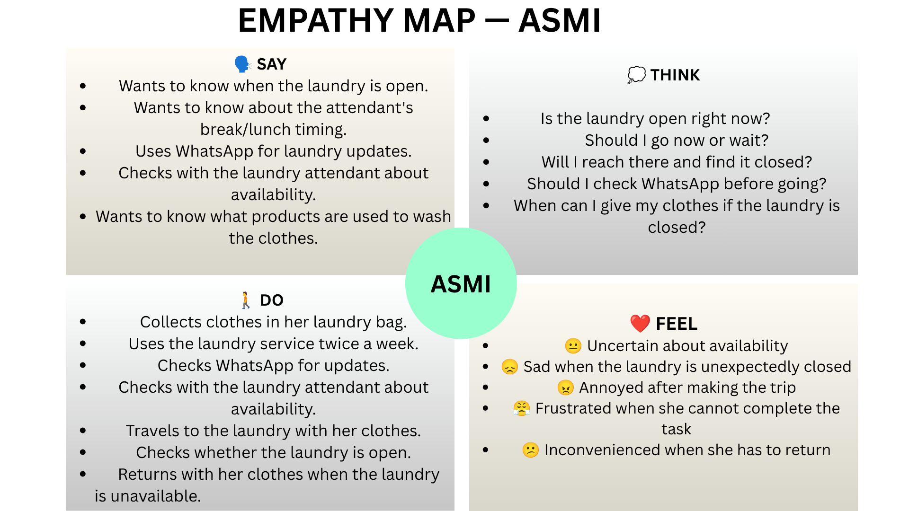
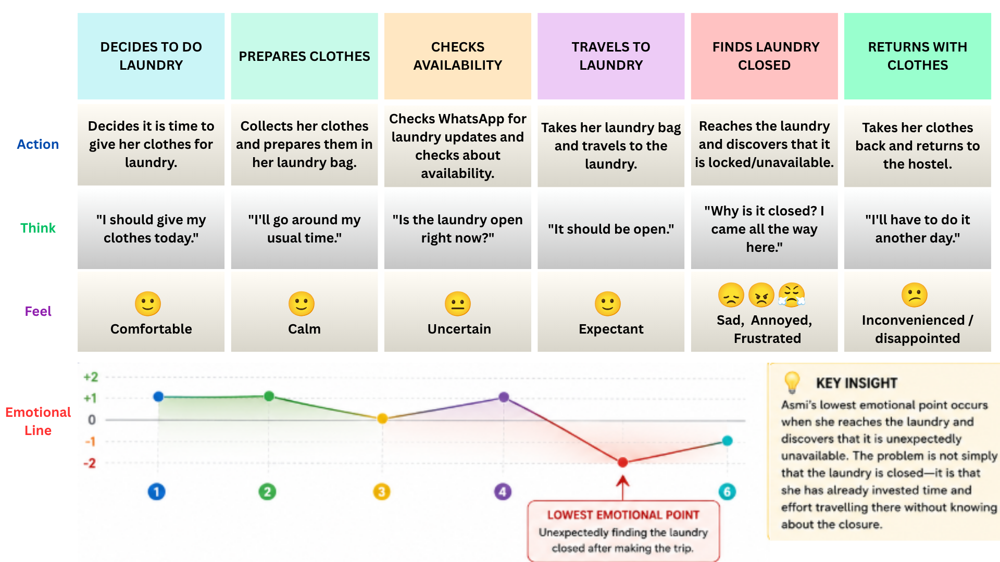
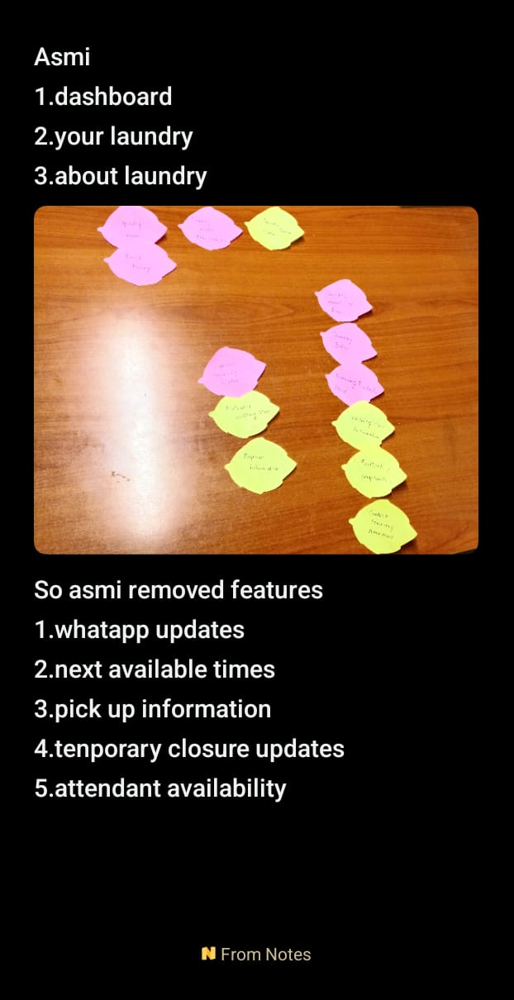
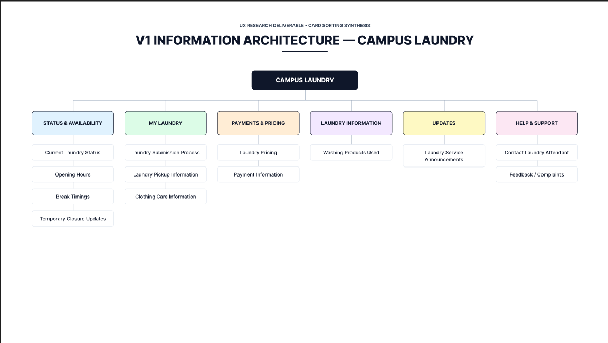
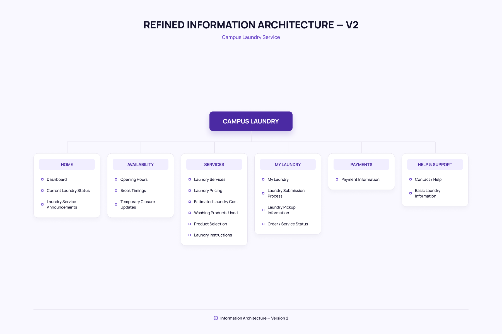
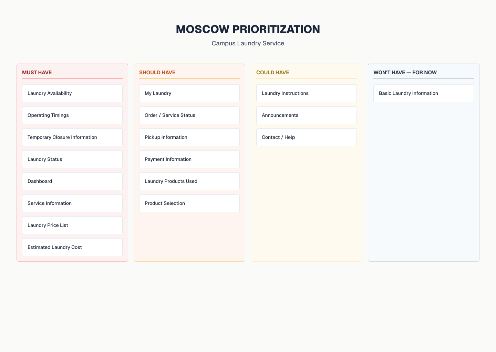
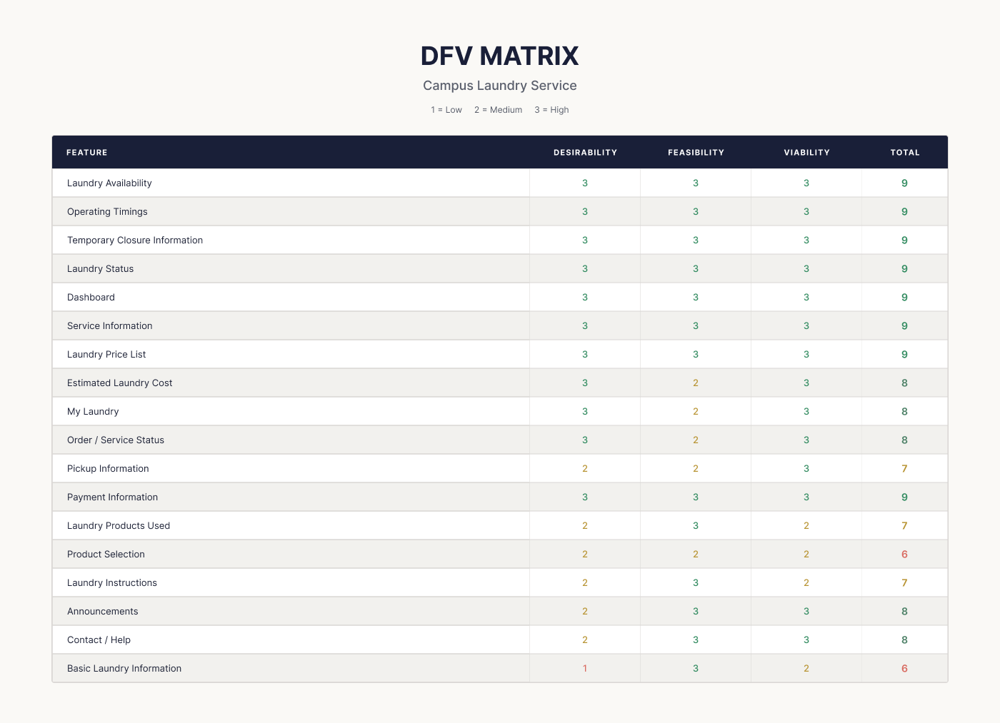
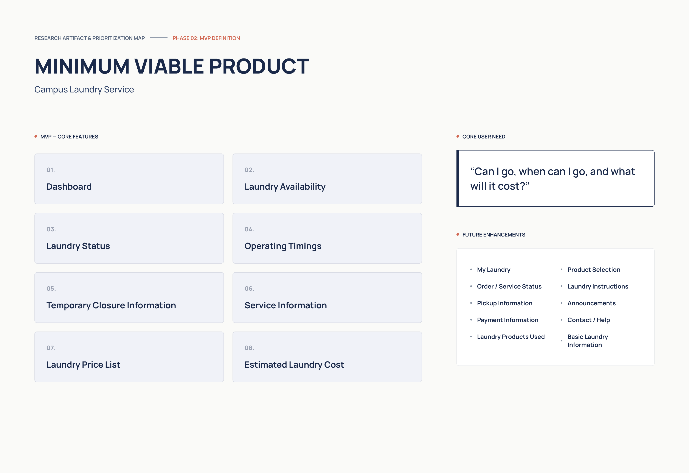

01
Goals
- Complete laundry without unnecessary hassle.
- Avoid making unnecessary trips.
- Know when the laundry is available.
- Plan laundry around her schedule.
UX RESEARCH & INFORMATION ARCHITECTURE
A research-driven exploration of how students experience and navigate the campus laundry service.
PROBLEM STATEMENT
THE PROBLEM
Students using the campus laundry service do not always have reliable information about whether the service is available before travelling to the laundry.
They may need to check with others, look for updates, or make the trip themselves to find out whether the service is available.
RESEARCH QUESTION
PROTO PERSONA
An initial persona created from our understanding of the campus laundry experience before conducting interviews.
PRIMARY USER HYPOTHESIS
University Hostel Student
01
02
03
04
IMPORTANT
This is a hypothesis, not a validated persona. The assumptions above will be tested against six student interviews in the next stage of the research.
PERSONA VALIDATION
The proto-persona was based on initial assumptions. Six student interviews were conducted to check whether those assumptions matched real experiences.
KEY FINDING
The interviews supported the need for reliable information about laundry availability and timing before travelling. However, the research challenged the assumption that WhatsApp should be treated as a core product feature.
REFINED PERSONA
Asmi is a hostel student who uses the laundry regularly. Her main need is to confidently decide when it is worth making the trip to the laundry.
OBSERVATION BLOG
Moving beyond what the user said, I observed Asmi's laundry experience to understand what happens before and during the trip.
WHAT I OBSERVED
Observed Asmi during her laundry routine.
She uses the laundry service twice a week.
She prepares her clothes before going to the laundry.
Before travelling, she needs to know whether the laundry service is available.
The availability of the service affects her decision to make the trip.
The uncertainty occurs before reaching the laundry, rather than only during the laundry process.
An unexpected closure can result in an unnecessary trip.
Carrying clothes to the laundry and returning without completing the task creates inconvenience.
The observation showed that the problem is not only about doing laundry, but also about knowing whether the trip is worth making.
KEY OBSERVATION
RESEARCHER REFLECTION
EMPATHY MAP
The empathy map brings together what Asmi says, thinks, does and feels to understand the experience from her perspective.

Empathy map created from interview and observation findings.
PAINS
GAINS
EMPATHY MAP INSIGHT
JOURNEY MAP
The journey map shows the steps Asmi takes while completing her laundry task and highlights where uncertainty and frustration appear.

Journey map showing Asmi's experience from planning her laundry to completing the task.
Asmi needs to know whether the laundry is available before deciding to travel.
Unclear availability and timings create uncertainty about whether she should go now or later.
An unexpected closure can turn the trip into wasted effort and leave the laundry task incomplete.
KEY JOURNEY INSIGHT
Providing clear and reliable information before the trip can help the user make a confident decision about when to visit the laundry.
USER STORIES
The validated user needs were translated into three user stories that define what Asmi should be able to accomplish through the proposed service.
AVAILABILITY
TIMINGS & CLOSURES
SERVICE & COST
DESIGN DIRECTION
FEATURE DEFINITION
The research findings and card sorting exercise were used to identify, combine and refine the features that should be considered for the laundry service.
Quick overview of the laundry service and important current information.
Shows whether the laundry service is currently available.
Shows opening, closing and break timings.
Provides information about planned or unexpected laundry closures.
Communicates the current status of the laundry service.
Explains the laundry services available to students.
Displays prices for the available laundry services.
Helps users estimate the expected cost of their laundry before placing a request.
Shows the products and materials used during the laundry process.
Allows users to select from available washing products where applicable.
Provides information about available pickup arrangements.
Provides information about payment options and payment details.
Allows users to understand the progress of their laundry service.
Displays important laundry-related announcements and notices.
Provides users with a way to ask questions or get assistance.
Provides general information about the laundry service.
Provides instructions and useful information before using the service.
Gives users access to their current and previous laundry information.
REMOVED AFTER CARD SORTING
These were removed because participants found them unnecessary, overlapping, unclear or less useful as standalone features.
CARD SORTING
The initial feature pool was presented to participants through card sorting. The exercise helped identify which features users naturally associate with one another and which features felt unclear or overlapping.
PARTICIPANT SORTINGS
SORTING EVIDENCE

Card sorting results from the research participants.
WHAT WE NOTICED
Some features appeared to communicate similar information and participants found them difficult to distinguish.
Participants identified features that seemed to perform the same or closely related tasks.
Not every participant considered every feature equally useful for completing their laundry task.
Participants also highlighted useful information that could improve transparency around services, products and pricing.
PARTICIPANT INSIGHT
The sorting exercise gave us a clearer understanding of how features could be grouped from the user's perspective rather than only from the designer's perspective.
INFORMATION ARCHITECTURE — V1
The first Information Architecture was created using the patterns identified through the card sorting exercise.

Information Architecture — Version 1
IA V1
This version is a starting point rather than the final structure. Tree testing will be used to understand whether users can actually find the information they are looking for.
TREE TESTING
Tree testing was used to evaluate whether users could find information within the first Information Architecture without relying on visual design.
TEST TASKS
Find out whether the laundry is currently available.
Find the laundry's operating timings.
Find information about laundry prices.
Find where to check the products used for laundry.
Find where to estimate the cost of your laundry.
PARTICIPANT RESULTS
Found all tested destinations confidently.
Confused between Laundry Availability and Laundry Status.
Took longer to locate temporary closure information.
Confused between Services, Products and Price List.
Found most tasks but hesitated between Announcements and Laundry Status.
Had difficulty finding Estimated Laundry Cost and Payment Information.
KEY INSIGHT
INFORMATION ARCHITECTURE — V2
The second Information Architecture was developed by refining the V1 structure using the findings from tree testing. The goal was to make related information easier to understand and locate.

Information Architecture — Version 2
WHAT CHANGED
Current laundry status is separated from opening hours, break timings and temporary closure information.
Laundry services, pricing, estimated cost, products and instructions are grouped around the user's service-related needs.
Payment information is kept separate from service pricing and cost estimation.
Personal laundry activities such as submission, pickup and service status remain together.
DESIGN PRINCIPLE
IA V2 focuses on making the most important information easier to locate while keeping related tasks together.
FEATURE PRIORITIZATION
The 18 proposed features were prioritized using the MoSCoW method to identify which features are essential, important, optional, or deferred for now.

MoSCoW prioritization of the 18 proposed features.
The prioritization places the features that directly address availability, timings, laundry status, service information and cost estimation in the Must Have category. Supporting features are prioritized according to their contribution to the overall laundry experience.
FEATURE EVALUATION
The proposed features were evaluated across Desirability, Feasibility and Viability to understand their overall value for the campus laundry service.

DFV evaluation of the 18 proposed laundry service features.
1 = Low 2 = Medium 3 = High
Total score = Desirability + Feasibility + Viability
KEY INSIGHT
The DFV evaluation was considered alongside the MoSCoW prioritization to identify the smallest set of features that can deliver the core laundry experience.
FINAL SOLUTION
The MVP brings together the findings from the research, feature prioritization, Information Architecture, MoSCoW and DFV evaluation to define the smallest useful version of the campus laundry service.

Final MVP scope for the campus laundry service.
CORE USER NEED
MVP FEATURES
FUTURE ENHANCEMENTS
My Laundry · Order / Service Status · Pickup Information · Payment Information · Laundry Products Used · Product Selection · Laundry Instructions · Announcements · Contact / Help · Basic Laundry Information
MVP DECISION